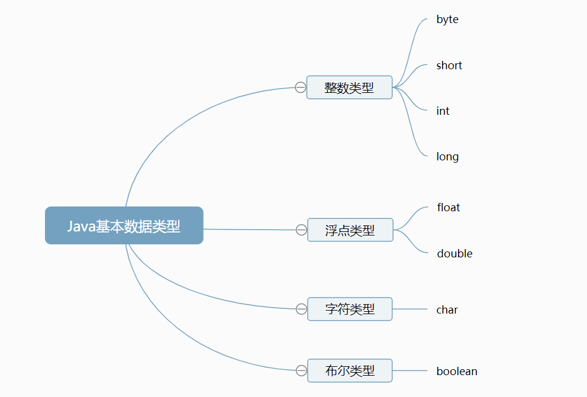

Java的数据类型分为基本数据类型和引用数据类型，
今天总结的是基本数据类型。在Java中，一共有八种基本数据类型，分别为整数类型（byte，short，int，long）、浮点类型（float，double）、字符类型（char）以及布尔类型（boolean）。

1.整数类型
分类：byte，short，int，long四种类型。
存储需求：分别为一个字节，两个字节，四个字节，八个字节。
取值范围：只需要知道byte为-2^7到2^7-1，即-128到127，short为-2^15到2^15-1,大约为负三万到三万左右，
int为-2^31到2^31-1，大约为负二十亿到二十亿左右，long为-2^63到2^63-1，知道比int更多即可。
默认值为：byte（0），short（0），int（0），long（0L）
包装类：byte（Byte），short（Short），int（Integer），long（Long）
用途：用来表示整数数据。
整数类型不加后缀默认为int类型。
通常情况下我们都会选择int类型使用（大小范围足以日常使用）。多于int范围的数据使用long类型，byte和short通常用于特定场合。
由于Java程序必须保证在所有机器上都能够得到相同的运行结果，所以每一种数据类型的取值范围都必须是固定的。
2.浮点类型
分类：float（单精度）和double（双精度）两种。
存储需求：分别为四个字节，八个字节。
取值范围：我们需要了解的是float有效位数为6-7位，而double为15位。
默认值：float（0.0f），double（0.0d）
包装类：float（Float），double（Double）
用途：用来表示带有小数的数据。
若带小数的数据若数据后面没有加后缀F（例如1998.09）则默认为为double类型。
通常情况下我们选择使用double类型，即双精度浮点类型（数值精度是float的两倍）。
从JDK 5.0开始，可以使用十六进制表示浮点数值。用p表示制数，尾数用十六进制，指数用十进制，指数基数为2.例如0.25即为0x1.0p-2。
因为二进制系统无法精确到1/10，所以浮点数值不适合参与禁止含有误差的计算中。
3.字符类型
分类：这里的字符类型指的是char类型。
存储需求：两个字节。
取值范围：\u0000 - \uffff
默认值：char类型值与Unicode编码有关，它的默认值为 'u0000'。
包装类：Character
用途：char类型用于表示单个字符，通常用来表示字符常量。
需要注意的是’A’表示的是编码为65的字符常量（单引号），而“A”表示包含A字符的字符串（双引号）。
Unicode编码单元可以表示十六进制值。
因为Java中char类型除了在UTF-16编码中来描述一个代码单元外，我们不怎么使用，并且我也只是个小白，这里我就暂时还没有过多的去了解。
4.布尔类型
分类：布尔类型即为boolean类型。
存储需求：一个字节/四个字节。
取值范围：它只有两个值：true和false，
默认值：false
包装类:Boolean
用途：布尔类型用于判断逻辑问题。
整数值和布尔值之间不能进行相互转换。
总结表：
Java基本数据类型
| 整数类型 | 浮点类型 | 字符类型 | 布尔类型 | |||||
| 分类 | byte | short | int | long | float | double | char | boolean |
| 存储需求 | 1字节 | 2字节 | 4字节 | 8字节 | 4字节 | 8字节 | 2字节 | 1字节/4个字节 |
| 取值范围 | -2^7到2^7-1 | -2^15到2^15-1 | -2^31到2^31-1 | -2^63到2^63-1 | 有效位数6-7位 | 有效位数为15位 | \u0000 - \uffff | true 和 false |
| 默认数值 | 0 | 0 | 0 | 0L | 0.0f | 0.0d | \u0000 | false |
| 包装类 | Byte | Short | Integer | Long | Float | Double | Character | Boolean |
| 用途 | 表示整型数据 | 表示有小数的数据 | 表示单个字符 | 判断逻辑问题 | ||||
由于还是还处于学习基础知识阶段，如有错误，欢迎指出！